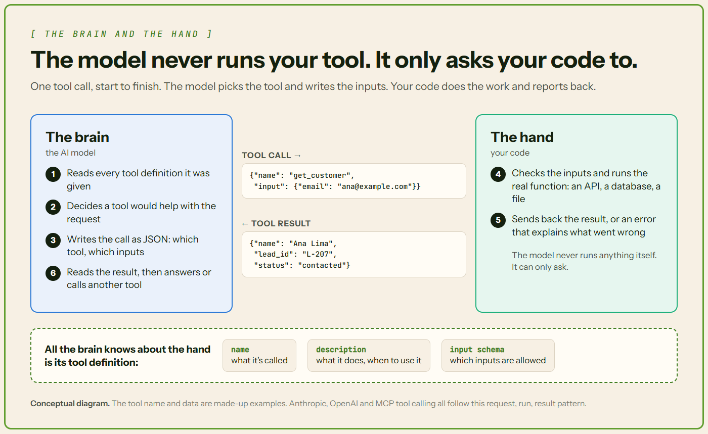
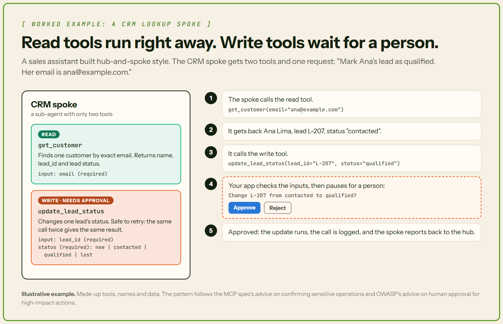

Tool design layer - Brain Needs Hand: The Art of Tool Design for AI Agents
An AI model can plan all day, but it can't press a button. Tools are its hands. Here's how to build ones an agent can actually use.
- An agent is an AI model in a loop. Tools let it act on real data and systems.
- The model never runs a tool itself. It asks, and code outside the model does the work.
- In one study, the same model fixed 18.0% or 10.3% of coding bugs. Only the tools changed.
- Good tools have clear names, tight inputs, short outputs and errors the model can act on.
- Risky tools need limits: few permissions, human approval and a log of every call.
🧠 A brain with no hands
Ask an AI model to book you a meeting. On its own, it can't. A model only writes text. For anything else, it needs a tool.
Anthropic, the company behind Claude, says agents "are typically just LLMs using tools based on environmental feedback in a loop." In plain words: the model thinks, uses a tool, looks at what happened, and goes again.
Tools are the layer that connects that loop to real data and real systems. The model is the brain. Tools are its hands.
This is the next part of our series. Last time, we covered hub-and-spoke agents: one lead agent handing work to helper agents. This time, we zoom in on the hands.
📖 Words you'll see in this article
| Term | What it means |
|---|---|
| LLM | Large language model. The AI "brain" behind tools like ChatGPT and Claude. |
| AI agent | An LLM that works in a loop, using tools step by step until a task is done. |
| Function | A named piece of code that takes inputs and does one thing. |
| API and endpoint | An API is how one program talks to another. An endpoint is one action it offers. |
| JSON and JSON Schema | JSON is a simple text format apps use to pass data. JSON Schema describes which data is allowed. |
| Token | A small chunk of text, a word or part of one. Models read and charge by tokens. |
| Context window | Everything the model can see at once. It's measured in tokens and has a limit. |
| MCP | Model Context Protocol, an open standard for plugging tools into AI apps. |
| CRM | Customer relationship management software, where sales teams track customers and leads. |
🧰 What a tool is
In plain words: a tool is a function the agent can call. It either fetches information or takes an action. Think get_customer or send_email.
- The model only asks. It writes a structured request. Your code runs the tool and sends the result back.
- Tools get work done. Without them, a model answers questions. With them, it can look things up and change things.
- Tools reach past training data. OpenAI says tool calling lets models "access data outside their training data." That means live prices, company systems and the real world.
Good to know: Training data is the text a model learned from. It stops at a cutoff date. It never included your private systems.
🗂️ Types of tools
In plain words: some tools read, some write, some work things out, and some are whole agents.
| Type | What it does | Examples |
|---|---|---|
| Read (retrieval) | Fetches information. Changes nothing. | Search, database query, CRM lookup, file read |
| Write (action) | Changes something in the world. | Send an email, create a ticket, update a record, make a booking |
| Compute | Works something out. | Run code, a calculator, convert data |
| Agent as tool | Hands a whole task to a helper agent. | A "flights" spoke in a hub-and-spoke system |
That last one is how a hub talks to its spokes, as in our hub-and-spoke article. OpenAI's Agents SDK has a shortcut for it, as_tool. It can "expose an agent as a callable tool without a full handoff."
Built-in tools vs your own
- Built-in tools come ready-made from the AI provider and run on its servers. Anthropic's include web search, web fetch and code execution. OpenAI's include web search and file search.
- Custom tools are the ones you write for your own systems. Your code runs them. Most of this article is about these.
Good to know: Read tools are low risk. Write tools change real things, so they get extra checks later in this article.
🔍 Anatomy of a tool definition
In plain words: a tool definition is what the model reads before it picks a tool. It usually has four parts.
- Name: short, action-first and clear.
get_customerbeatscustomerorhelper. Add detail when it helps, likeget_customer_by_email. - Description: what it does, when to use it, when not to, and what it returns. Anthropic says a description should cover "When it should be used (and when it shouldn't)."
- Input schema: a JSON Schema for the inputs. It sets each input's type and marks which are required or optional. An enum limits a value to a fixed list. A format names the expected shape, like a date such as 2026-11-07. Many validators skip this check unless you turn it on.
- Parameter descriptions: one line per input, with an example value. For instance: "Exact email, e.g. ana@example.com."
{"name": "get_customer", "description": "Find one customer by exact email. Don't use it to search by name. Returns name, lead ID and lead status.", "input_schema": {"type": "object", "properties": {"email": {"type": "string", "description": "Exact email, e.g. ana@example.com"}}, "required": ["email"]}}get_customer tool definition as one line of JSON, in Anthropic's format (OpenAI calls the schema field "parameters"). It shows all four parts: name, description, input schema and a parameter description. Made-up tool.Good to know: The description is really a prompt. The model picks tools by reading it. Anthropic says descriptions "can collectively steer agents toward effective tool-calling behaviors." A vague one leads to wrong calls.
🔄 The tool-calling flow, step by step
In plain words: the model asks, your app checks and runs, and the model reads the answer.
- Your app sends the tool definitions along with the user's message.
- The model decides whether a tool would help. If so, it returns a tool call: a tool name plus arguments (input values).
- Your app checks the arguments. Then it runs the function.
- Your app sends the output back as a tool result. It carries the call's ID, so the model knows which request it answers.
- The model reads the result. Then it calls another tool or gives its final answer.
- The loop repeats until it stops. Steps 2 to 5 are the agent loop, and they run again and again. The model can also ask for several tools in one turn, like two lookups that don't depend on each other. These are parallel tool calls: your app runs them all and sends back every result, and OpenAI lets you switch them off. The loop stops when the model answers without asking for a tool. Add your own stop condition too, like a maximum number of turns, so a stuck agent can't loop forever. OpenAI's Agents SDK, for example, ends a run with an error once it passes that limit.
OpenAI's guide describes the first five steps the same way.

One round trip, step by step
Here's the same flow with our running example. A user asks: "What stage is Ana's lead at? Her email is ana@example.com."
- Your app sends the tool definition. It describes
get_customer: "Find one customer by exact email." Its one required input is the email. - The model asks for the tool. It replies: use
get_customerwith ana@example.com. The request gets an ID, like a tracking number. - Your code runs it. It checks the email and looks Ana up in the CRM. It sends back her name, lead L-207 and status "contacted", tagged with the same tracking number.
- The model answers. "Ana Lima's lead is at the contacted stage."
Good to know: One reply can hold more than one tool call. Your app runs each one and sends back each result with its own ID.
📤 Designing tool outputs
In plain words: everything a tool returns lands in the context window. Big results cost more and bury the useful parts.
- Return only what's needed. Short, structured, relevant fields.
- Skip raw dumps. A full API response or a page of HTML fills the context fast.
- Page or trim big results. Anthropic suggests "pagination, range selection, filtering, and/or truncation." Pagination means sending results one page at a time.
- Say when you cut something. Anthropic says to "steer agents with helpful instructions" after truncating. For example: "Showing 20 of 340 results. Add a date filter to narrow it."
- Keep formats consistent across tools. Anthropic found even the choice of JSON, XML or Markdown can affect results.
- Include IDs and links the agent needs next. Readable names help the model think. But a follow-up call may need an exact ID. Anthropic's example: find a user by name, then message them using their ID.
Bad: {"uuid": "0f8e2c1a-7b3d-4e9a-9c2f-5d1b6a8e4f20", "fn": "Ana", "stage_cd": 2}
Good: {"name": "Ana Lima", "lead_id": "L-207", "status": "contacted"}Anthropic's Slack example shows the payoff. A detailed reply used 206 tokens. A concise one used 72.

Try this: Print one real result from your tool before you ship it. If it's hard for you to read, it's hard for the model too.
🛠️ Tool design best practices
In plain words: a few small, clear tools beat a big, messy toolbox.
Does design really matter? In 2024, Princeton researchers tested a coding agent called SWE-agent. They kept one model, GPT-4 Turbo, and changed only its tools. On 300 real GitHub bugs, the full toolset fixed 18.0%. Without its custom file editor, it fixed 10.3%.

- Small, focused toolset. Too many tools make picking the right one harder. More on this below.
- No overlap. Anthropic: "Make sure each tool you build has a clear, distinct purpose."
- Right size. One tool per real task, not one per API endpoint. One
schedule_eventbeatslist_users,list_eventsandcreate_event. - Separate read from write. Then reads can run freely while writes get checks. MCP lets a tool label itself read-only or destructive.
- Idempotent where possible. That means running it twice has the same effect as once. A retry won't create a duplicate ticket. MCP has a label for this too.
- One naming pattern. Use verb_noun:
get_customer,update_lead_status,send_email. Anthropic also suggests shared prefixes, likeasana_searchandjira_search. - Build in guardrails at the tool level. Don't rely on the prompt to keep a tool safe. Put the rules inside the tool's own code, where the model can't talk its way around them. For example,
update_lead_statusaccepts only the four allowed statuses, checks that the user may edit that lead, and changes one lead at a time. OWASP advises enforcing permissions in your own systems "rather than relying on an LLM to decide if an action is allowed or not." The MCP spec also says tool servers must validate inputs, control access and limit how often tools can be called.
How many tools is too many?
Every tool definition sits in the context window before the agent starts. Anthropic shared an example with five MCP servers: 58 tools using about 55,000 tokens "before the conversation even starts." OpenAI suggests fewer than 20 tools at the start, calling it "just a soft suggestion."

Good to know: Need a big toolbox anyway? Load tools only when needed. Anthropic's Tool Search Tool lets the model search for the few it needs. In Anthropic's example, that cut up-front context from about 77,000 tokens to 8,700. In internal tests, it also raised accuracy (Figure 5).
A 2025 paper, RAG-MCP, saw a similar pattern. Picking relevant tools first more than tripled accuracy on its test: 43.13% against 13.62%.

Test your tools on real tasks
How do you know your tools work? Test them. Anthropic builds a quick prototype, then runs an evaluation on tasks "grounded in real world uses."
- Read the transcripts, the full log of tool calls and results.
- Lots of invalid inputs suggest the description or examples need work.
- Lots of repeat calls may mean page sizes or limits need adjusting.
- Let AI help. Anthropic pastes transcripts into Claude Code and has Claude improve the tools.
More on testing in our guide to evaluating AI agents.
🚫 Common tool design mistakes
In plain words: most weak tools go wrong in one of these nine ways.
| Mistake | What it looks like | The fix |
|---|---|---|
| Vague names and descriptions | process_data, helper_tool | verb_noun names and full descriptions |
| No "when not to use" | The model calls it in the wrong situations | Say when not to use it |
| One tool per endpoint | A whole API wrapped as dozens of tiny tools | One tool per real task |
| Overlapping tools | search_customer and find_client | Merge them, or make the difference clear |
| Overloaded tools | One tool with an action input doing many unrelated jobs | Split it by job |
| Loose schemas | Free text where an enum belongs, nothing marked required | Types, enums and required fields |
| Bloated outputs | Full API responses or raw HTML | Only the fields that matter |
| Cryptic errors | A stack trace or "Error 500" | A message the model can act on |
| Unguarded writes | A delete or send tool with no checks | Input checks plus human approval |
Here's what a poor and a good definition look like side by side.

Good to know: Combining the steps of one job is fine, like schedule_event. Hiding unrelated jobs behind one action switch is not.
⚠️ Error handling
In plain words: when a tool fails, the error goes back to the model. That message is its only clue about what to fix.
- Write readable errors. "Customer not found. Check the email format." beats a stack trace, the raw crash log a program prints. MCP says good tool errors give "actionable feedback that language models can use to self-correct."
- Check arguments before running, especially for writes. MCP servers "MUST" validate all tool inputs.
- Set timeouts and retry limits. MCP says apps should "Implement timeouts for tool calls." Cap retries too, so a broken tool can't loop forever.
- Let the model recover. It can retry with fixed input, try another tool, or tell the user.
- Log every failure, so you can debug it later.
Good to know: Mark failures clearly. Anthropic's API (is_error: true) and MCP (isError: true) both let a tool flag its result as an error, so the model knows the call failed.
{
"type": "tool_result",
"tool_use_id": "toolu_01A09q90qw90lq917835lq9",
"content": "Customer not found for ana@exmple.com. Check the spelling of the email, or ask the user to confirm it.",
"is_error": true
}get_customer call sent back in Anthropic's format, with is_error set to true. The user mistyped the email, and the message tells the model how to recover. Made-up data.🔐 Tool security and permissions
In plain words: a tool that can delete, pay or send can do damage. Limit what each one can do.
- Least privilege. Give each agent only the tools it needs. OWASP, a security nonprofit, says to limit tools "to only the minimum necessary."
- Keep credentials in your code. API keys live in your app, which runs the tool. Scope each key to just what that tool needs. The model never needs to see them. OWASP also says actions should run with the user's own access and "the minimum privileges necessary."
- Human approval for risky actions, like payments, deletions and outside messages. MCP says a person "SHOULD" be able to deny tool calls.
- Treat tool results as untrusted. A web page or file can hide instructions. That's indirect prompt injection: it happens "when an LLM accepts input from external sources, such as websites or files." MCP says to "Validate tool results before passing to LLM."
- Keep an audit log. MCP says to "Log tool usage for audit purposes."
Good to know: MCP lets tools label themselves read-only or destructive. But apps "MUST consider tool annotations to be untrusted unless they come from trusted servers."
More in our articles on prompt injection and agent guardrails.
🧪 Worked example: a CRM lookup spoke
In plain words: one spoke, one read tool, one write tool, and a person in front of the write.
Let's put it all together. Picture a sales assistant built hub-and-spoke style. One spoke handles the CRM. It gets just two tools:
get_customer(read): finds a customer by email. Returns name, lead ID and lead status. It runs right away.update_lead_status(write): takes a lead ID and a status from a fixed list: new, contacted, qualified or lost. It needs a person's approval.
A user asks: "Mark Ana's lead as qualified. Her email is ana@example.com." Here's what happens:
- The spoke calls
get_customer. It gets back lead L-207, status "contacted". - It calls
update_lead_statuswith L-207 and "qualified". - Your app checks the inputs. Then it pauses and asks a person to approve.
- The person approves. The update runs and the call is logged.
- The spoke reports back to the hub.

Good to know: update_lead_status is safe to retry. If the network drops and the call runs twice, the lead is still just "qualified".
📋 Tool design checklist
Run every new tool through this list before it ships.
- ☐ The name is verb_noun and says exactly what the tool does.
- ☐ The description says what it does, when to use it, when not to, and what it returns.
- ☐ Every input has a type, a one-line description and an example.
- ☐ Required inputs are marked. Fixed choices use an enum.
- ☐ It does one real task, and no other tool does the same job.
- ☐ Results are short, consistent and include the IDs the next call needs.
- ☐ Big results are paged or trimmed, with a note saying so.
- ☐ Errors say what went wrong and how to fix it.
- ☐ Inputs are checked before it runs. Calls have timeouts and retry limits.
- ☐ Write tools are separate, safe to retry, and need approval when risky.
- ☐ The agent gets only the tools and keys it needs, and every call is logged.
- ☐ It was tested on real tasks, and someone read the transcripts.
✅ Conclusion
The model gets the headlines, but tools decide what an agent can do. Give each tool one job, a clear name and an honest description. Keep inputs tight and outputs short. Return errors the model can fix. Fence in risky tools with few permissions, approval and a log. Get the hands right, and the brain looks a lot smarter.